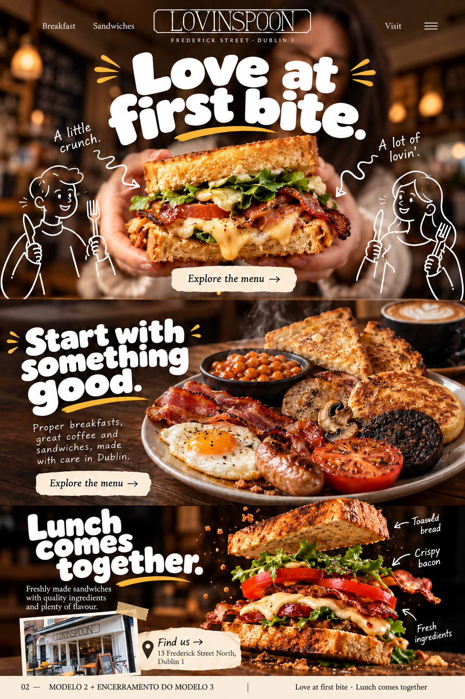

Love at first bite.
Lunch comes together.
Hero e breakfast do modelo 2, encerramento do modelo 3. A combinação escolhida, com assets separados, fotografia como fundo e texto vivo por cima.
Abrir estudo animado ↗Abrir guia PDF ↗Ler README ↗A direção aprovada.
Três seções principais: Love at first bite, Start with something good e Lunch comes together. O postcard da fachada fica dentro do encerramento.

Prancha de direção da combinação. Não é screenshot do navegador.
Marca e assets.


README e verificação.
Registros do local.


Site em inglês; documentos em português. Campanhas de comida são ilustrações de fotografia gerada, separadas das fotos reais do local. Preços do menu anexado não são apresentados como atuais. Ler QA.md para o estado da revisão em navegador antes de publicar.